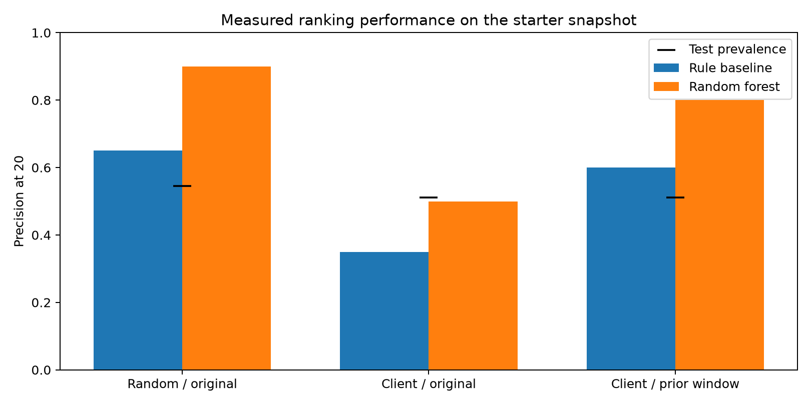
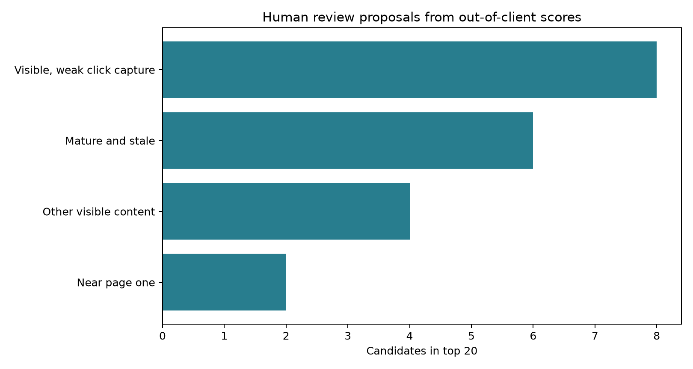

Abstract
Can a small model help a FlyRank content editor choose which pages to review for declining search visibility? This study uses the bundled 30,000-page, 32-client anonymized starter snapshot, rather than the full warehouse. A shallow random forest is compared with explicit rule rankings under random-row, held-out-client, and prior-window designs. With the original features, measured Precision@20 changes from 90.0% on random rows to 50.0% on held-out clients; a prior-window alternative measures 80.0% versus 60.0% for its baseline on that same client holdout. These retrospective results support a human review experiment, not a claim of future accuracy or causal traffic lift.
01 / The decision
Which pages deserve an editor's attention?
A content team has a limited review budget. Age and visibility rules are easy to explain, but their rankings may miss useful combinations of signals. The practical question is whether a shallow model can help find decline-labeled pages without relying on the answer or repeatedly seeing the same clients in training and test.
The case study follows an actual audit of the Week-5 notebook: reproduce its result, challenge the split, inspect feature timing, and convert the cautious result into an editorial review queue. No content was rewritten or published by the model.
02 / Data
A small snapshot, with explicit boundaries
The source is data/raw/content_refresh_anonymized.csv: 30,000 rows, 44 columns and 32 pseudonymized clients. Each row describes one content item. The active-page filter is impressions over 90 days >0; all 30,000 starter rows remain. The file contains trailing 90-day aggregates and previous/recent 30-day windows, but no exact calendar export date. This is the starter release, not the gated v20260703 warehouse and not a 79-million-row analysis.
The target is trend_direction == down, based on an impression decrease greater than 20% from the previous to the recent 30-day window. Other labels count as negative. This differs from the source research paper's 10% threshold. No client names, domains, article text, or raw search queries are used. Pseudonyms are used only for splitting and joining.
Data fingerprint
SHA-256: 99a2bdada7d15ce08114fc2ba5e32601e95ccb4e63c328ce35aadfc1e3114d75
03 / Method
Change the test before trusting the score
All forests use 100 trees, maximum depth 5, random seed 42, and one CPU worker. The first experiment reproduces the original unstratified 80/20 split and five features: age, time since update, 90-day impressions, average position and CTR. The Week-5 baseline ranks impressions only when age is at least 180 days and impressions at least 500.
The second experiment retains that exact model and baseline but uses GroupShuffleSplit by client, with 20% of clients held out. The third uses the same client split and only previous-30-day impressions, clicks and sessions; its baseline ranks previous impressions. This baseline change is explicit: the comparison within each experiment uses identical test rows, while comparisons across feature sets are sensitivity analyses.
Direct label columns, IDs and existing decision flags are excluded. The prior-window variant also excludes overlapping 90-day aggregates and snapshot age/freshness. A deliberately invalid target-as-feature control reaches 100% accuracy, confirming that the harness detects a trivial leakage case; that control is never used in the queue.
Five GroupKFold folds assess split sensitivity. No model or threshold is tuned to maximize these audit results. Queue scores are out-of-fold: each row's client is excluded from the forest that scores it. Model outputs are ranking scores, not calibrated risk estimates.
04 / Results
The original 90% result depends on the split
| Design | Forest | Rule | Prevalence | Shared clients |
|---|---|---|---|---|
| Random rows / original features | 90.0% | 65.0% | 54.5% | 31 |
| Held-out clients / original features | 50.0% | 35.0% | 51.1% | 0 |
| Held-out clients / prior-window features | 80.0% | 60.0% | 51.1% | 0 |

The five grouped prior-window folds measure P@20 from 65.0% to 100.0%. The forest exceeds its baseline in four folds and falls below it in one. These are sensitivity results, not confidence intervals. The combined out-of-fold queue has P@20 of 75.0%, alongside overall prevalence 54.2%; global top-k scores from separately trained folds are exploratory and are not assumed calibrated across clients.
Actual errors remain. In the prior-window client holdout, four of the top 20 candidates are not decline-labeled. Their cause cannot be diagnosed from this snapshot; evergreen or seasonal explanations would be speculation.
05 / Limits
A useful review signal is not a forecast
- The sample is selected for active content using an outcome-containing 90-day window; results are conditional on that population.
- Previous impressions occur before the outcome window but also enter the relative-change denominator. Regression to the mean and label construction may contribute to predictability.
- There is no dated, forward-time panel test, intervention, or independent replication. Group separation alone does not establish deployment performance.
- Top-20 results are sensitive: one label changes precision by five percentage points. Client mixes and prevalence vary.
- Observed decline is not bad-content truth. Scores do not identify a causal reason or the likely benefit of an edit.
06 / Recommendations
Rank for review. Keep publication with people.
The notebook exports a local, ignored queue with rank, review score, explicit reason codes, proposed action, an effort assumption, and mandatory human approval. It applies transparent current-state heuristics after scoring; these are editorial archetypes, not learned clusters or causal explanations.
- Verify evidence first. Fewer than 100 prior impressions or missing position requires measurement review.
- Inspect mature, stale pages. Age ≥180 days and no update for ≥90 days prompts a factual/intent review, not an automatic rewrite.
- Review click capture. Page-one position with CTR below 0.5% prompts a snippet/intent check.
- Inspect relevance near page one. Positions 11–20 prompt a relevance and internal-link review.

The source paper's freshness association motivates inspection, but selection into refreshing prevents a causal multiplier claim. In our unadjusted sample, decline labels occur in 60.8% of rows with update recency ≥90 days versus 51.2% of the remainder; this comparison does not estimate the effect of refreshing.
Assume a ten-hour weekly review budget at $30/hour ($300). Those are planning assumptions, not measured costs or ROI; the top 20 proposals total 27 assumed review-hours. An editor selects a feasible mix. Tracking faults, factual changes, publishing, consolidation, redirects, deletion, and claims of traffic lift must never be automated from this queue.
Pause for missing schema, >5% missing required values, or >10% domain violations. Investigate >50% prior-impression median shifts or >10-point zero-share shifts. Once dated labels mature, investigate P@20 deterioration of ten points across three batches or baseline parity; any retraining needs new validation, owner approval and rollback. These monitoring thresholds are proposals, not production-tested rules.
07 / Reproducibility
Follow every number back to an executed cell
Python 3.12.14, scikit-learn 1.9.1; seeds and package requirements are recorded. Run the validation notebook, then the playbook, using the reproduction instructions. The queue regenerates locally and is not committed.
08 / Acknowledgments & data credit
Built on the FlyRank ML Internship dataset
Data and teaching framework: FlyRank. Analysis and write-up: Hicham Halfi, with AI assistance for coding and drafting. The source research paper is The State of AI-Driven SEO, March 2026; this study is a separate starter-sample audit with different scope and labels.